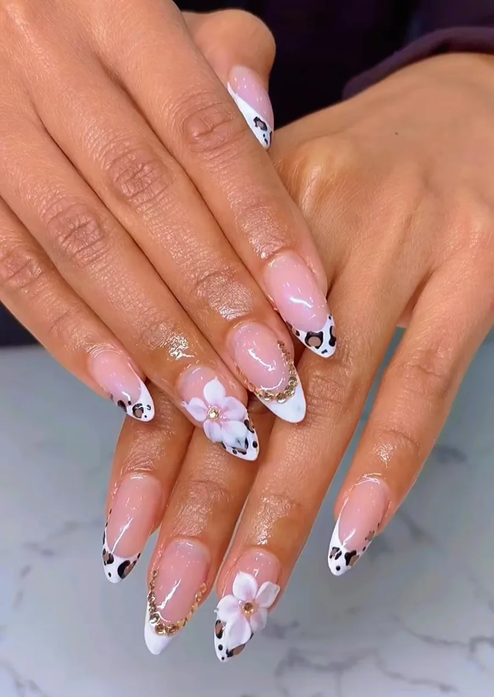

5 stars honestly isn't enough, Kevin is magic, May is perfection. Came for the Mani/Pedi, and left contemplating all of my previous salon choices. The leg and foot massage during the pedicure was so good, I'm genuinely considering breaking up with my massage therapist, and just going to Kevin when my feet hurt.
Home / Reviews
655 reviews, still 5.0
A selection of real Google reviews from clients of Red Deer Nail Lounge, quoted word for word. There are hundreds more on Google.

Amazing nails and pedicure! Congratulations, May and Kevin, your new lounge is beautiful, bright and spotlessly clean! May has been doing my nails for 17 years, always a wonderful job. Tony made my pedicure heaven with his reflexology massage and surprise treatment at the end (I'm not allowed to say). And one of their signature cocktails is a lovely addition to the experience! Best nail salon in Red Deer.
FOUR YEARS at Red Deer Nail Lounge with May and I will NEVER go anywhere else. These sets last 5-6 weeks EVERY. SINGLE. TIME. Everything is HANDCRAFTED. No stickers. No shortcuts. Just pure talent and artistry. She makes sure you leave with exactly the design you asked for - and somehow it always looks even better.
The pedicures are AMAZING. The chairs, the massage, the drinks, all the little extras - it's actually relaxing and feels like you're treating yourself instead of just going to get your toes done. The whole place is beautiful and incredibly clean, the service is fantastic, and the people are even better.
I've had many pedicures over the years, but I have to admit this was the best one I've ever had. Kevin was professional, kind, and incredibly talented. The salon was beautiful, exceptionally clean, and offered an endless selection of colors and options. (Not to mention a mimosa!!)
It was 6:51 p.m., and they close at 7:00 p.m., but when another customer came in asking for a pedicure, they happily took her instead of turning her away because they were only a few minutes from closing. That level of care and willingness to help customers says a lot about the business.
May was so good! She was very friendly and kind and took my inspo picture and did it even better, I couldn't believe how real she got the cherries to look!
Great place for a relaxing pedicure. They have the most comfortable massage chairs and the staff is very friendly. I loved that we didn't feel rushed during our pedicure, it took just over an hour. The experience felt more like a spa instead of a nail salon.
Was able to get in for a nail fill on short notice - Kevin did a great job! Everyone was incredibly friendly and the studio is absolutely beautiful. He said they have around 2,000 polish colours - amazing!
I booked an appointment for 9:30am and was seen right on time. I requested the luxury Gel Pedicure and it was well worth the price for what you get. Tony took his time, and I never felt rushed as a client.
What a GORGEOUS new salon! So much attention to design detail in the space itself and just an overall friendly vibe - everyone was chatting and laughing amongst each other during my service. May did an amazing job on my nails as usual. My favorite part was the hot towel and massage at the end!
My mom and I have been seeing May since I was a teenager and her spa has been built much like her home was, a warm, inviting atmosphere that makes you feel like family! Tony provided an incredible pedicure experience and I could tell he took a lot of pride in his work!
Beautiful, comfortable and amazing nails at this salon. Definitely recommend. May did an unreal job fixing my nails and her attention to detail on the shape and perfection with the polish was unmatched.
Me and my best friend went and got our nails done, it was absolutely incredible!! They were extremely sweet and welcoming, especially it being our first time! The place was stunning and super clean! We both had the red deer sunset drink, and it was so freaking good!
This is literally the best pedicure I've ever had in my life. They're so friendly and the fact that they remember your name when you walk in and they greet you by name is a wonderful thing.
May is truly one of the most talented nail techs I have had the pleasure to visit. I have been coming to her for almost 9 years. She goes above and beyond and she is always learning new skills and techniques to bring the best designs I have ever seen.
Your chair is waiting.
Bookings are taken by phone, and walk-ins are always welcome when a chair is free.